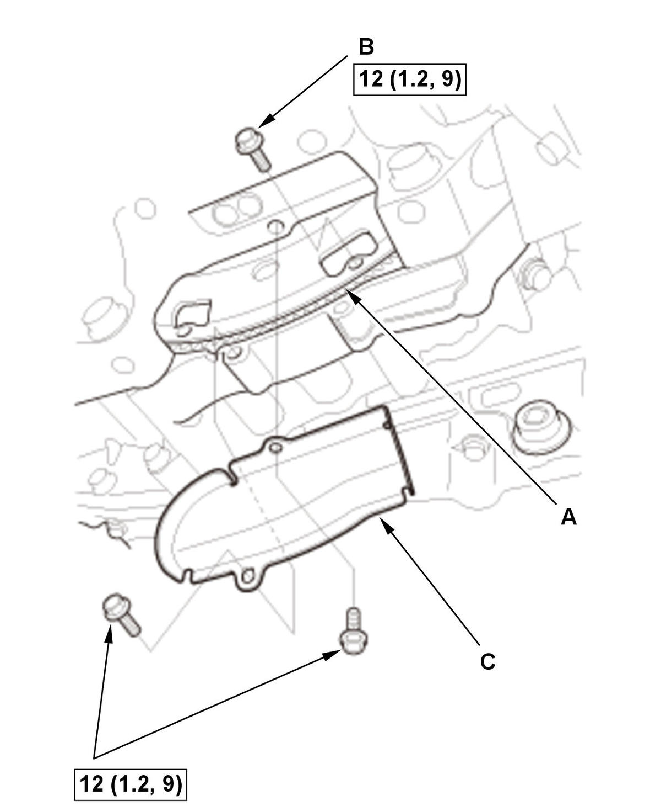
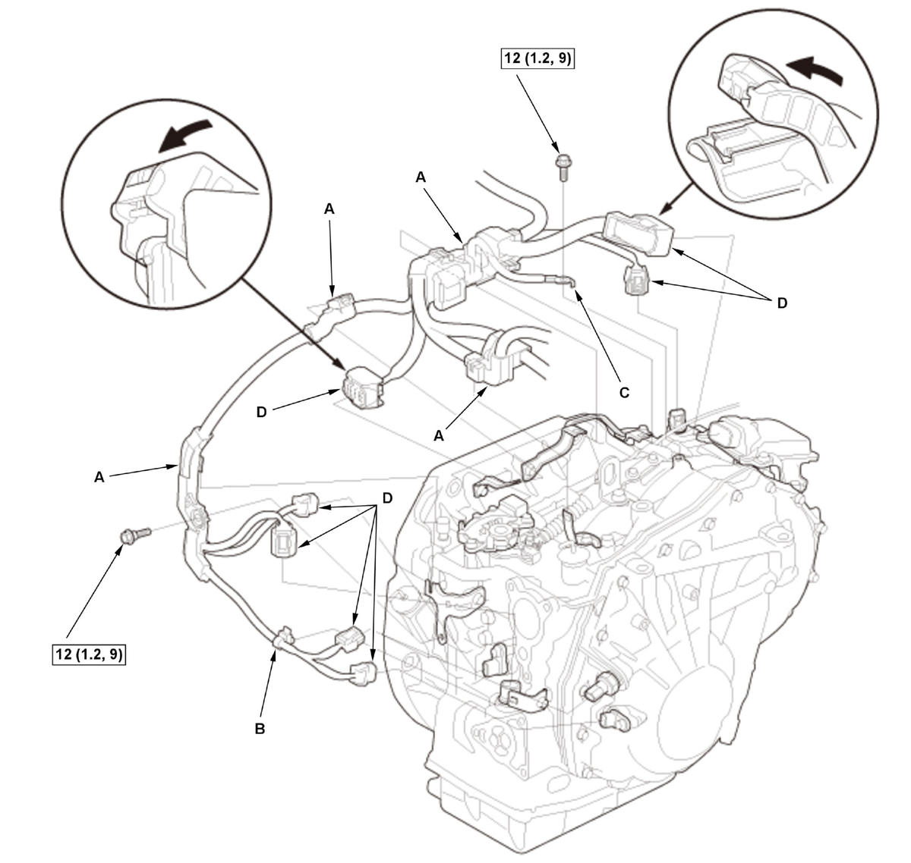
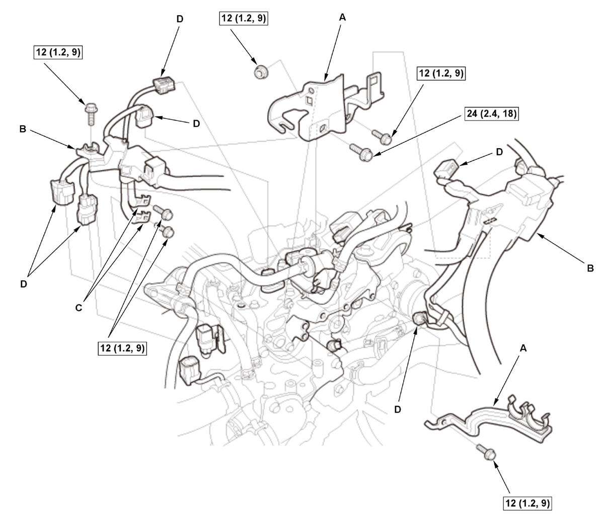
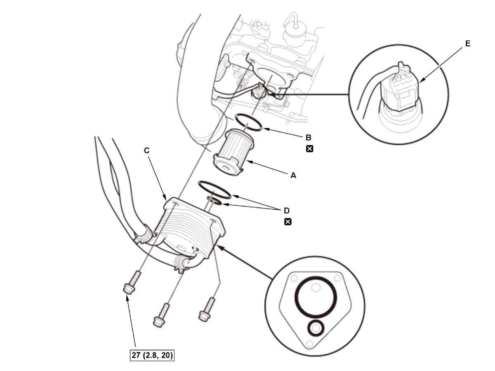

CVT Transmission Removal and Installation (L15B7/L15BA/L15BY (CVT)): Installation
NOTE:
- How to read the torque specifications .
- Use fender covers to avoid damaging painted surfaces.
- Keep all foreign particles out of the transmission.
- Apply a light coat of clean transmission fluid on all O-rings before installation.
- When connecting the connector, check for corrosion, dirt, or oil, and clean or repair if necessary.
- Harness Bracket - Install
- Torque Converter - Install
1. Install the dowel pins (A). 2. Install the torque converter (B).
NOTE: Make sure the torque converter is fully engaged on the input shaft, the stator shaft, and the transmission fluid pump drive sprocket. Failure to do so will result in severe transmission or engine damage.
- Transmission - Install
1. Hold the transmission (A) on a transmission jack, and raise it to engine level. NOTE: Be careful not to drop the torque converter.
2. Attach the transmission to the engine.
- Lower Transmission Assembly Mounting Bolt - Install
NOTE: Refer to the Exploded View as needed during this procedure.
- Intermediate Shaft - Install
- Driveshaft Inboard Joint - Connect (Both Sides)
- Drive Plate - ConnectFig 2: Drive Plate Bolts And Torque Converter Cover Bolts With Torque Specifications (L15B7/L15BA/L15BY - CVT)

Courtesy of HONDA, U.S.A., INC.1. Attach the drive plate (A) to the torque converter with eight torque converter bolts (B). 2. Rotate the crankshaft pulley as necessary to tighten the bolt to half of the specified torque, then to the final torque, in a crisscross pattern.
3. Check that the crankshaft rotates freely.
4. Install the torque converter cover (C).
- Front Subframe - Install
1. Set the subframe adapter (VSB02C000016) on a transmission jack (A), line up the slots in the arms with the bolt holes on the corner of the jack base, and tighten the bolts. 2. Attach the subframe adapter to the front subframe (B).
- Torque Rod Mounting Bolt - Loosely Install
- Intake Air Resonator - Install
- Front Brace - Install
- Lower Arm Mounting Bolt - Install (Both Sides)
- Lower Arm Ball Joint - Connect (Both Sides)
- Lower Stabilizer Link Ball Joint - Connect (Both Sides)
- Tie-Rod End Ball Joint - Connect (Both Sides)
- Connector (EPS Subharness) - Connect
1. Connect the connectors (A), and make sure they are fully seated. - Exhaust Pipe A - Install
- Front Floor Brace - Install (With Front Floor Brace)
- Vehicle - Lift Down
- Transmission Mount - Loosely Install
- Upper Transmission Assembly Mounting Bolt - Install
NOTE: Refer to the Exploded View as needed during this procedure.
- Engine Support Hanger - Remove
1. Remove the engine support hanger and the universal lifting eyelet. 2. Install the front damper caps.
- Engine/Transmission Mount - Tightening Procedure
- Intake Manifold Bracket - Install
- Shift Cable (Transmission Side) - Install
NOTE: Be sure to adjust the shift cable after installing the shift cable.
- TCM Harness - Install
1. Install the harness covers (A) and the harness clamp (B).

Courtesy of HONDA, U.S.A., INC.2. Install the ground cable (C).
3. Connect the connectors (D), and make sure they are fully seated.
- Engine Wire Harness - Install
1. Install the harness brackets (A) and the harness covers (B).
Fig 5: Exploded View Of Engine Wire Harness Components With Torque Specifications (L15B7/L15BA/L15BY - CVT)
Courtesy of HONDA, U.S.A., INC.2. Install the ground cables (C).
3. Connect the connectors (D).
- Intake Air Duct F - Install
- Intake Air Duct E - Install
- CVTF Warmer - Install
1. Install the CVTF warmer strainer (A) with a new O-ring (B) in the direction shown.

Courtesy of HONDA, U.S.A., INC.2. Install the CVTF warmer (C) with new O-rings (D).
NOTE:
- The CVTF warmer is aluminum part. Be careful not to damage the CVTF warmer.
- Make sure the O-rings are firmly installed in the grooves.
- Check the connector (E) for corrosion, dirt, or oil, and clean or repair if necessary.
- 12 Volt Battery Base - Install
- 12 Volt Battery - Install
- Air Cleaner - Install
- Front Grille Cover - Install
- Front Wheel - Install (Both Sides)
- Steering Joint - Connect
- Transmission Fluid - Refill
- Transmission Fluid Level - Check
- Transmission - After Install Check
1. Make sure all four wheels to rotate freely. 2. Turn the vehicle to the ON mode.
3. Move the shift lever to each position, and check that the shift position indicator follows the shift lever operation.
4. Start the engine.
NOTE: Check that the engine starts in P or N position/mode, and does not start in any other positions/modes.
5. Check the shift lever operation.
6. Make sure the vehicle is turned to the OFF (LOCK) mode with the shift lever in P position/mode. If it does not, adjust the shift cable again.
- Engine Undercover Lid - Install (With Engine Undercover Lid)
- Engine Undercover - Install
- TCM - Reset
(Only for Replacing Transmission)
NOTE: This procedure is not required, if the transmission and the TCM are replaced simultaneously.
- Front Wheel Alignment - Check
- VSA Sensor Neutral Position - Memorize
- Vehicle - Road Test